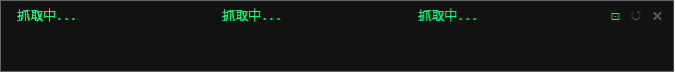
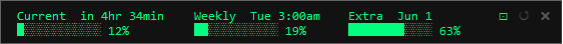

桌面懸浮 HUD，即時顯示 Claude Code 的用量百分比


Current session、Weekly、Extra usage 三欄同時顯示，百分比進度條一目了然
進度條與文字同步變色
< 70% 綠色
≥ 70% 黃色
≥ 90% 紅色
自動轉換 Asia/Taipei 時區。Session 顯示倒數，Weekly 顯示星期幾+時間，Extra 顯示日期
每 5 分鐘自動重新抓取，每次都重啟 claude.exe 確保資料最新
每秒重新確認視窗在最上層，被工具列蓋住後 1 秒內自動恢復
預設已釘選（⊡ 綠色）。點一下解除釘選可拖曳移動，再點一下重新釘選鎖定位置
Ctrl+S 對 HUD 截圖，存成 claude_monitor_demo.png。需安裝 Pillow，取消對應註解即可啟用
claude_monitor.py # 主程式 claude_monitor.vbs # 雙擊啟動器（放桌面，無 cmd 視窗）
| 項目 | 說明 |
|---|---|
| Windows 10/11 | 需要 Windows DWM API（圓角） |
| Python 3.x | 需要 pythonw.exe（無視窗啟動） |
| winpty | pip install winpty |
| Claude Code CLI | 已安裝並登入，claude.exe 存在於 npm 全域路徑 |
打開 claude_monitor.py，確認路徑正確：
CLAUDE_PATH = r'C:\Users\你的使用者名稱\AppData\Roaming\npm\node_modules\@anthropic-ai\claude-code\bin\claude.exe'
可用以下指令確認：
where claude
pip install winpty
推薦：雙擊 claude_monitor.vbs，無 cmd 視窗靜默啟動
或直接執行：
python claude_monitor.py
| 操作 | 功能 |
|---|---|
| 拖曳視窗 | 移動 HUD 位置（任意區域都可拖曳） |
| 點擊 ⊡ | 釘選 / 解除釘選（預設綠色 = 已釘選，點一下解除可拖曳） |
| 點擊 ↺ | 手動刷新 |
| 點擊 ✕ | 關閉（自動結束背景 claude.exe） |
| 右鍵 | 選單（手動刷新 / 退出） |
Claude Code 的 /usage 是 slash command，只能在 TTY 環境下使用。使用 winpty 建立假終端機（PTY），讓 claude.exe 以為自己在真實終端機中運行。
winpty.PtyProcess.spawn(claude.exe)">\xa0" 出現"/usage\r""spent" 出現在輸出中ESC (\x1b)\r，regex 解析輸出程式內建截圖功能，預設關閉。啟用步驟：
pip install Pillow
__init__ 中的註解# self.root.bind("<Control-s>", lambda _: self._save_screenshot())
_save_screenshot() 方法的所有註解啟用後按 Ctrl+S 即可截圖，儲存為 claude_monitor_demo.png。
技術細節：使用 Windows GDI PrintWindow（PW_RENDERFULLCONTENT=2）直接從視窗 DC 抓取畫面，搭配 DwmGetWindowAttribute 取得實際邊界，再透過 GetDIBits 轉成 PIL Image 存檔。
確認 CLAUDE_PATH 路徑正確、已登入 Claude Code（直接執行 claude 看是否正常）、已安裝 winpty。
點 ✕ 或右鍵退出會自動清除。若強制關閉 Python，需手動在工作管理員結束 claude.exe。
Claude Code 的 API 資料本身有一定延遲，非 monitor 問題。每次刷新都重新啟動 claude.exe 以確保拿到最新快取。
正常情況下每秒自動恢復置頂，1 秒內會自動回來，無需手動操作。
已修復。原因是 Text widget 的 scan 滾動機制在釘選時仍會捲動視圖，造成第一行被捲出畫面。
| 設定 | 位置 | 說明 |
|---|---|---|
| 刷新間隔 | refresh_loop() 的 time.sleep(300) | 單位秒，預設 300（5 分鐘） |
| 置頂檢查間隔 | _keep_on_top() 的 root.after(1000, ...) | 單位毫秒，預設 1000 |
| 黃色閾值 | pct >= 70 | 預設 70%，影響進度條與文字顏色 |
| 紅色閾值 | pct >= 90 | 預設 90%，影響進度條與文字顏色 |
| 透明度 | -alpha, 0.75 | 0.0～1.0 |
| 起始位置 | geometry("+30+1106") | 距螢幕左上角偏移 |
| 預設釘選 | self.pinned = True | True = 啟動時鎖定，False = 啟動時可拖曳 |
| 時區 | TAIPEI_TZ | 預設 UTC+8 |